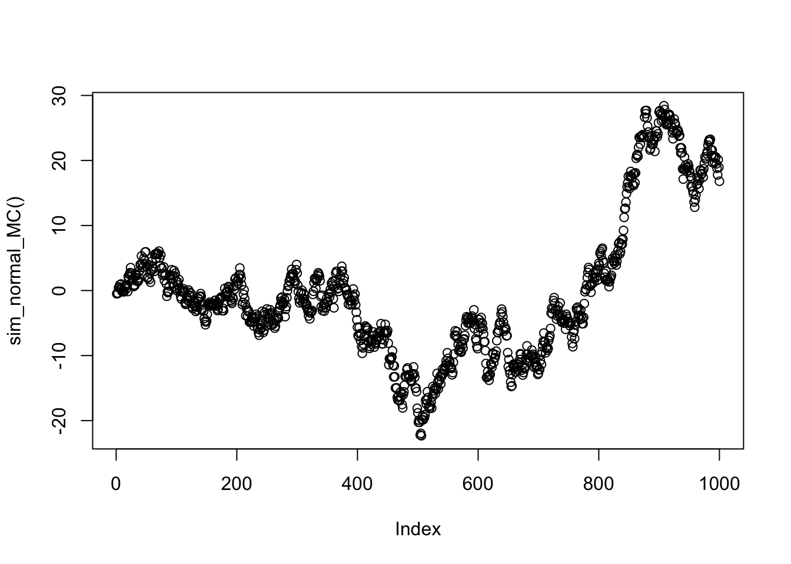

Last updated: 2017-03-06
Code version: c7339fc
You should be familiar with the multivariate normal distribution and the idea of conditional independence, particularly as illustrated by a Markov Chain.
This vignette introduces the precision matrix of a multivariate normal. It also illustrates its key property: the zeros of the precision matrix correspond to conditional independencies of the variables.
Let \(X\) be multivariate normal with covariance matrix \(\Sigma\).
The precision matrix, \(\Omega\), is simply defined to be the inverse of the covariance matrix: \[\Omega := \Sigma^{-1}\].
The key property of the precision matrix is that its zeros tell you about conditional independence. Specifically: \[\Omega_{ij}=0 \text{ if and only if } X_i \text{ and } X_j \text{ are conditionally independent given all other coordinates of } X.\]
It may help to compare and contrast this with the analogous property of the covariance matrix: \[\Sigma_{ij}=0 \text{ if and only if } X_i \text{ and } X_j \text{ are independent}.\]
That is, whereas zeros of the covariance matrix tell you about independence, zeros of the precision matrix tell you about conditional independence.
Consider a Markov chain \(X_1,X_2,X_3,\dots\) where the transitions are given by \(X_{t+1} | X_{t} \sim N(X_{t},1)\). You might think of this Markov chain as corresponding to a type of “random walk”: given the current state, the next state is obtained by adding a random normal with mean 0 and variance 1.
The following code simulates a realization of this Markov chain, starting from an initial state \(X_1 \sim N(0,1)\), and plots it.
set.seed(100)
sim_normal_MC=function(length=1000){
X = rep(0,length)
X[1] = rnorm(1)
for(t in 2:length){
X[t]= X[t-1] + rnorm(1)
}
return(X)
}
plot(sim_normal_MC())
If you think a little you should be able to see that the above random walk simulation is actually simulating from a 1000-dimensional multivariate normal distribution!
Why?
Well, let’s write each of the \(N(0,1)\) variables we generate using rnorm() in that code as \(Z_1,Z_2,\dots\). Then: \[X_1 = Z_1\] \[X_2 = X_1 + Z_2 = Z_1 + Z_2\] \[X_3 = X_2 + Z_3 = Z_1 + Z_2 + Z_3\] etc.
So we can write \(X = AZ\) where \(A\) is the 1000 by 1000 matrix \[A = \begin{pmatrix} 1 & 0 & 0 & 0 & \dots \\ 1 & 1 & 0 & 0 & \dots \\ 1 & 1 & 1 & 0 & \dots \\ \dots \end{pmatrix}.\]
Let’s take a look at what the covariance matrix Sigma looks like. (We get a good idea from just looking at the top left corner of the matrix what the pattern is)
A = matrix(0,nrow=1000,ncol=1000)
for(i in 1:1000){
A[i,]=c(rep(1,i),rep(0,1000-i))
}
Sigma = A %*% t(A)
Sigma[1:10,1:10] [,1] [,2] [,3] [,4] [,5] [,6] [,7] [,8] [,9] [,10]
[1,] 1 1 1 1 1 1 1 1 1 1
[2,] 1 2 2 2 2 2 2 2 2 2
[3,] 1 2 3 3 3 3 3 3 3 3
[4,] 1 2 3 4 4 4 4 4 4 4
[5,] 1 2 3 4 5 5 5 5 5 5
[6,] 1 2 3 4 5 6 6 6 6 6
[7,] 1 2 3 4 5 6 7 7 7 7
[8,] 1 2 3 4 5 6 7 8 8 8
[9,] 1 2 3 4 5 6 7 8 9 9
[10,] 1 2 3 4 5 6 7 8 9 10Now let us examine the precision matrix, \(\Omega\), which recall is the inverse of \(\Sigma\). Again we just show the top left corner of the precision matrix here.
Omega = chol2inv(chol(Sigma))
Omega[1:10,1:10] [,1] [,2] [,3] [,4] [,5] [,6] [,7] [,8] [,9] [,10]
[1,] 2 -1 0 0 0 0 0 0 0 0
[2,] -1 2 -1 0 0 0 0 0 0 0
[3,] 0 -1 2 -1 0 0 0 0 0 0
[4,] 0 0 -1 2 -1 0 0 0 0 0
[5,] 0 0 0 -1 2 -1 0 0 0 0
[6,] 0 0 0 0 -1 2 -1 0 0 0
[7,] 0 0 0 0 0 -1 2 -1 0 0
[8,] 0 0 0 0 0 0 -1 2 -1 0
[9,] 0 0 0 0 0 0 0 -1 2 -1
[10,] 0 0 0 0 0 0 0 0 -1 2Notice all the 0s in the precision matrix. This is because of the conditional independencies that occur in a Markov chain. In a Markov chain (any Markov chain) the conditional distribution of \(X_t\) given the other \(X_s\) (\(s \neq t\)) depends only on its neighbors \(X_{t-1}\) and \(X_{t+1}\). That is, \(X_{t}\) is conditionally independent of all other \(X_s\) given \(X_{t-1}\) and \(X_{t+1}\). This is exactly what we are seeing in the precision matrix above: the non-zero elements of the \(t\)th row are at coordinates \(t-1,t\) and \(t+1\).
The following fact is also useful, both in practice and for intuition.
Suppose \(X \sim N_r(0,\Omega^{-1})\), where the subscript \(r\) indicates that \(X\) is \(r\)-variate.
Let \(Y_1\) denote the first coordinate of \(X\) and \(Y_2\) denote the remaining coordinates (so \(Y_2:= (X_2,\dots,X_r)\)). Further let \(\Omega_{12}\) denote the \(1 \times (r-1)\) sub matrix of \(\Omega\) that consists of row 1 and columns 2 to r.
The conditional distribution of \(Y_1 | Y_2\) is (univariate) normal, with mean \[E(Y_1 | Y_2) = - (1/\Omega_{11}) \Omega_{12} Y_2\]
and variance \(1/\Omega_{11}\).
Of course there is nothing special about \(X_1\): a similar result applies for any \(X_p\). You just have to replace \(\Omega_{11}\) with \(\Omega_{pp}\) and define \(\Omega_{12}\) to be the \(p\)th row of \(\Omega\) with all columns except \(p\).
An application of this is imputation of missing values: suppose one of the \(X\) values is missing, say \(X_p\) is missing, but you know the covariance matrix and all the other \(X\) values. Then you could impute \(X_p\) by its conditional mean, which is a simple linear combination of the other values that can be read directly off the \(p\)th row of the precision matrix. This idea is the essence of Kriging.
Consider the Markov chain above. The conditional distribution of \(X_1\) given all other \(X\) values is given by \[X_1 | X_2,X_3,\dots \sim N(X_2/2, 1/2).\]
And the conditional distribution of \(X_2\) given all other \(X\) values is \[X_2 | X_1,X_3, \dots \sim N((X_1+X_3)/2, 1/2).\] Similarly for \(X_p\) for \(p>2\). The intuition is that, if one wanted to guess what the value of \(X_p\) were given all other \(X\)s, the best guess would be the average of its neighbours.
sessionInfo()R version 3.3.2 (2016-10-31)
Platform: x86_64-pc-linux-gnu (64-bit)
Running under: Ubuntu 14.04.5 LTS
locale:
[1] LC_CTYPE=en_US.UTF-8 LC_NUMERIC=C
[3] LC_TIME=en_US.UTF-8 LC_COLLATE=en_US.UTF-8
[5] LC_MONETARY=en_US.UTF-8 LC_MESSAGES=en_US.UTF-8
[7] LC_PAPER=en_US.UTF-8 LC_NAME=C
[9] LC_ADDRESS=C LC_TELEPHONE=C
[11] LC_MEASUREMENT=en_US.UTF-8 LC_IDENTIFICATION=C
attached base packages:
[1] stats graphics grDevices utils datasets methods base
other attached packages:
[1] MASS_7.3-45 expm_0.999-0 Matrix_1.2-8
[4] workflowr_0.4.0 rmarkdown_1.3.9004
loaded via a namespace (and not attached):
[1] Rcpp_0.12.9 lattice_0.20-34 gtools_3.5.0 digest_0.6.12
[5] rprojroot_1.2 grid_3.3.2 backports_1.0.5 git2r_0.18.0
[9] magrittr_1.5 evaluate_0.10 stringi_1.1.2 tools_3.3.2
[13] stringr_1.2.0 yaml_2.1.14 htmltools_0.3.5 knitr_1.15.1 This site was created with R Markdown